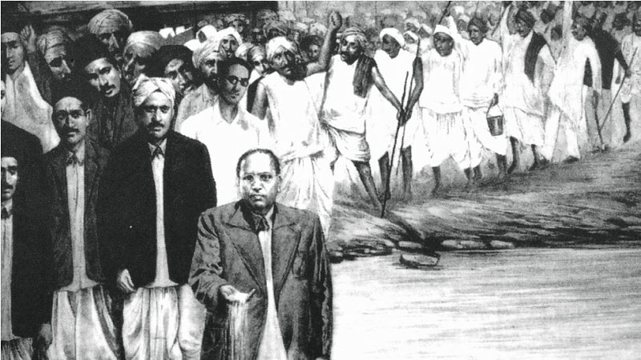
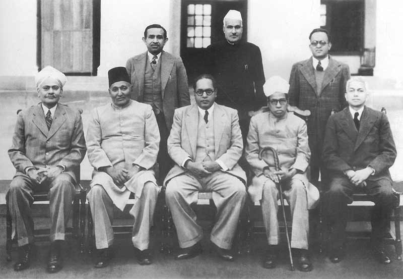

Early Life and Education of Ambedkar
Dr. B.R. Ambedkar’s early life and education laid the groundwork for his future as a champion of social justice and the principal architect of the Indian Constitution.
He was born on 14 April 1891, in Mhow, Madhya Pradesh, in the Mahar caste. Being born in a caste that traditionally constituted inferior village servants, his early years were marred by the harsh realities of caste discrimination. His experience of facing societal ostracization, and humiliation during his childhood instilled in him a deep resolve to fight against the injustices of the caste system.
Dr. Ambedkar's academic journey began at Elphinstone High School, Mumbai, where he was one of the first Dalit students. Despite facing discrimination, he excelled academically, which led him to Elphinstone College, and subsequently, to Columbia University in New York. His time at Columbia University was transformative, exposing him to the works of sociologists and economists, and to the principles of liberty, equality, and fraternity, which later became the bedrock of his vision for India.
In 1916, Dr. Bhimrao Ramji Ambedkar moved to London to continue his studies at the London School of Economics (LSE) and to study Law at Gray’s Inn.
Dr. B.R. Ambedkar’s Advocacy for Dalit Rights
After completing his studies abroad, Dr. B.R. Ambedkar returned to India in the early 1920s. The social injustices plaguing Indian society at that time made Bhimrao Ramji embark on a lifelong journey of the eradication of caste discrimination and the upliftment of the marginalized.
Baba Saheb was of the view that only an adequate political representation could reform the social status of the untouchables. So, he began to organize the untouchables by means of his newspapers, socio-cultural forums, and conferences.
In 1924, Dr. Bhimrao founded the Bahishkrit Hitakarini Sabha (Society for the Welfare of the Excluded), aimed at promoting education among the Dalits and improving their socio-economic status. He also started many periodicals like “Mook Nayak” (Leader of the Silent), “Bahishkrit Bharat” (Excluded India), and Equality Janta to voice the concerns of the Dalits.
One of the first major public actions led by Baba Saheb Ambedkar was the Mahad Satyagraha in 1927, which aimed to assert the rights of Dalits to use water from a public tank in Mahad, Maharashtra. Similarly, the Kalaram Temple Movement in 1930 sought to secure the right of Dalits to enter Hindu temples.
Recognizing the importance of legal avenues for social reform, Dr. B.R. Ambedkar also represented the Dalits in front of the British authorities. He attended the Round Table Conferences in London as a representative of the Dalits, advocating for separate electorates for Dalits to ensure their political representation. The efforts of Baba Saheb culminated in the form of the Poona Pact of 1932, which provided for reserved seats for Dalits in the general electorate.
Political Career of Dr. B.R. Ambedkar
Spanning several decades, Dr. B.R. Ambedkar’s political journey included roles as a legislator, a party leader, a member of the drafting committee of the Indian Constitution, and independent India’s first Law Minister.
Early Political Engagements
As his first significant foray into formal politics, Dr. B.R. Ambedkar founded the Independent Labour Party in 1936 to represent the interests of Dalits and the working classes. The party contested and achieved some success in the 1937 Bombay Presidency elections, establishing Baba Saheb as a significant political figure.
Recognizing the need for a focused political effort to address the issues of the Dalits, Dr. B.R. Ambedkar transformed the Independent Labour Party into the Scheduled Castes Federation in 1942. The Federation aimed explicitly at mobilizing Dalits for political action, although it struggled to achieve significant electoral success on a national level.
Drafting of the Indian Constitution
Dr. B.R. Ambedkar’s most enduring legacy in Indian politics is his role as the Chairman of the Drafting Committee of the Constituent Assembly, which was responsible for framing the Indian Constitution. As the principal architect of the Indian Constitution, Dr. B.R. Ambedkar ensured that the document enshrined the principles of justice, liberty, equality, and fraternity. The inclusion of provisions such as the abolition of untouchability and reservations for certain backward classes reflect his vision for an independent India free from the menaces of caste discrimination and inequality.
Labour Minister in Viceroy’s Executive Council
Dr. B.R. Ambedkar served as the Labour Minister in the Viceroy’s Executive Council during the period of 1942-1946. During his tenure, Dr. Bhimrao introduced and championed several crucial labor reforms, including the Factories Act of 1946, the Trade Unions Act of 1947, etc. He also played a crucial role in laying the groundwork for social security programs for workers. He actively supported the creation of the Employees’ State Insurance (ESI) Corporation and the Employees’ Provident Fund Scheme (EPF), which provide medical insurance and retirement benefits respectively.
Independent India’s First Law Minister
Upon India’s independence in 1947, Dr. B.R. Ambedkar was appointed as the country’s first Minister of Law and Justice in Jawaharlal Nehru’s cabinet. In this capacity, his most notable contribution was the introduction of the Hindu Code Bill, which sought to codify and reform Hindu personal law and give women equal rights in personal matters. The Bill, however, could not be passed by the Parliament, which led Baba Saheb to resign from the Nehru Cabinet in 1951.
Later Electoral Politics
The later political efforts of Dr. Bhimrao Ramji Ambedkar included his attempts to enter Parliament through elections in the newly independent India. However, he could not get much success in this phase of his political career and had to face several electoral defeats. On 30 September 1956, Baba Saheb announced the establishment of the Republican Party of India by dismissing his earlier organization the Scheduled Castes Federation. However, before the formation of the new party could materialize, he died on 6 December 1956.
Conversion to Buddhism and Later Years
Dr. B.R. Ambedkar’s interest in Buddhism began early in his career, as he explored various philosophies and religions in his quest for social justice and equality. In 1935, in a provincial conference of the depressed classes held at Yeola (Nasik), he announced publicly for the first time that – “I was born in Hinduism, but I will not die as a Hindu”.
On October 14, 1956, Dr. Bhimrao Ramji Ambedkar formally converted to Buddhism in a massive public ceremony held in Nagpur. His decision was not just a personal spiritual choice but also a political and social act, aimed at rejecting the Hindu caste system. Here onwards, Dr. B.R. Ambedkar spent the rest of his life spreading Buddhism. Dr. B.R. Ambedkar’s conversion had a profound impact on Indian society and politics. It sparked a mass movement of conversion to Buddhism among Dalits, known as the Dalit Buddhist movement, which continues to this day.
Major Contributions of Dr. B.R. Ambedkar
Dr. B.R. Ambedkar’s contributions to Indian society are vast and varied, reflecting his multifaceted personality as a social reformer, economist, politician, and legal luminary. Here are some of his major contributions:
- Architect of the Indian Constitution: Perhaps his most enduring legacy is drafting the Indian Constitution. As the Chairman of the Drafting Committee, he shaped the Indian Constitution to ensure Justice, Liberty, Equality, and Fraternity for all the citizens of India.
- Conception of Reserve Bank of India (RBI): Dr. B.R. Ambedkar played a crucial role in the conception of the Reserve Bank of India (RBI). In 1925, he presented his views to the Royal Commission on Indian Currency and Finance (Hilton Young Commission) wherein he argued for the establishment of a Central Banking System for India. His views heavily influenced the Commission’s recommendations, which formed the basis for the RBI Act of 1934 – the statute that established the Reserve Bank of India (RBI).
- Crusader Against Caste Discrimination: Throughout his life, he campaigned vigorously for the rights of Dalits and other marginalized groups, thus promoting social justice and equality in India.
- Social Reformer and Educator: Understanding the transformative power of education, Baba Saheb emphasized the importance of education for the upliftment of the downtrodden. He established colleges and encouraged the Dalit community to pursue higher education as a means to break the shackles of caste and social inequality.
- Champion of Women’s Rights: Dr. Ambedkar was a strong advocate for women’s rights and worked towards reforming the Hindu personal laws that discriminated against women. He introduced the Hindu Code Bill, which sought to provide equal rights to women in matters of inheritance, marriage, and divorce.
- Labor Reforms: Even before holding an official position, Dr. B.R. Ambedkar advocated for the rights and welfare of workers through his organization Independent Labour Party (ILP). Later, in the capacity of Labour Minister in the Viceroy’s Executive Council, he played a pivotal role in shaping labor reforms in India.
- Political Leadership: Through his foray into politics, Dr. B.R. Ambedkar also provided political leadership.
- Literature and Writing: Dr. Bhimrao Ramji Ambedkar was a prolific writer, and his works on law, economics, religion, and social issues remain highly influential. His books, such as “Annihilation of Caste”, “Who Were the Shudras?”, and “The Buddha and His Dhamma”, continue to inspire readers worldwide.
Legacies of Dr. B.R. Ambedkar
Through his myriad contributions, Dr. B.R. Ambedkar has left a lasting impact on the nation’s socio-cultural and political landscapes. In contemporary India, his legacy is commemorated through various memorials, institutions, and events. Some of the prominent symbols of his legacy in present India can be seen as follows:
- Ambedkar Jayanti: The birth anniversary of Dr. B.R. Ambedkar on 14 April is celebrated as Ambedkar Jayanti across India. On this day, commemorative events are held nationwide to honor his life and work.
- Statues and Memorials: Statues of Dr. Bhimrao Ramji Ambedkar adorn public spaces in cities and towns across India. Additionally, numerous memorials, museums, and libraries dedicated to Dr. Ambedkar have been established.
- Influence in Politics: Dr. Ambedkar’s ideas and principles continue to shape the policies and ideologies of various political parties. Many political parties, especially those representing marginalized communities, pay homage to Bhimrao Ramji Ambedkar’s legacy by incorporating his teachings into their political agendas.
- Reservation Policies: Dr. Bhimrao Ambedkar’s advocacy for social justice and affirmative action is reflected in India’s reservation policies.
- Literature and Arts: Dr. Ambedkar’s life and work have inspired a rich body of literature, art, music, and cinema. Numerous books, biographies, poems, and plays have been written about him.
- Grassroots Movements: Dalits and other marginalized communities in India continue to draw inspiration from his life and teachings in their struggle for equality and dignity. The Ambedkarite Movement is a prominent example.
- Education and Awareness: Efforts to promote education and awareness about Dr. Ambedkar’s life and ideas are ongoing. Schools, colleges, and community organizations organize seminars, workshops, and study circles to disseminate his teachings and promote social reform.
- Educational Institutions: Dr. B.R. Ambedkar University and College have been established across the country in Baba Saheb’s name.